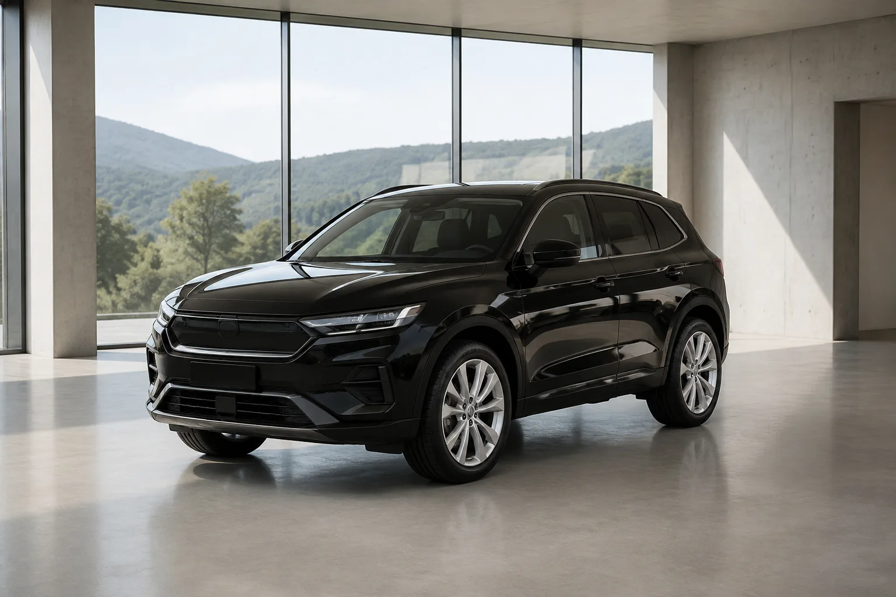
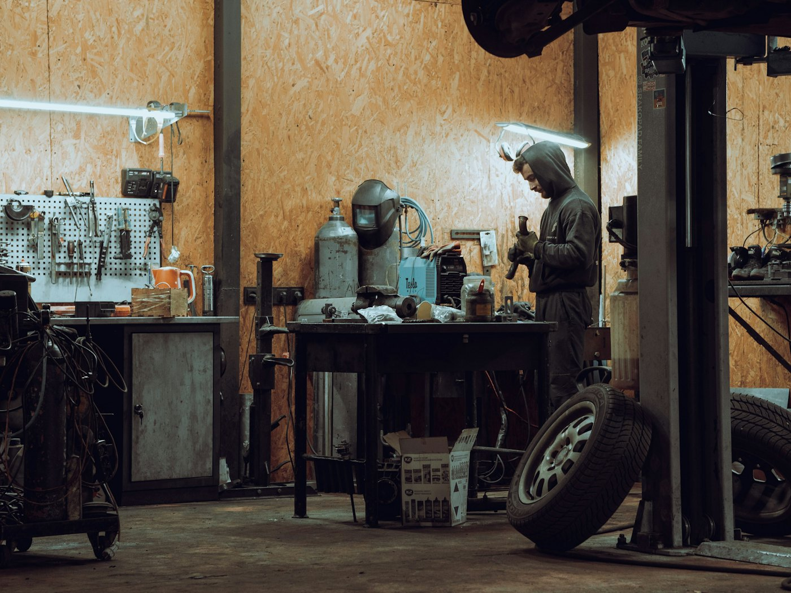

Neuwagen — Renault & Dacia
Neuwagen von Renault und Dacia, auf Wunsch auch andere Marken — Beratung ohne Hochglanz-Druck, dafür mit Handschlag-Qualität.
Beratung anfragenAutohaus Gassert · Fahrenbach-Trienz
Stadt, Familie oder Landstraße — entdecken Sie drei Beispielfahrzeuge und vergleichen Sie Ihre Favoriten.
Renault · Neuwagen
KI-generierte Fahrzeugkonzepte und Beispielangaben. Die Bilder zeigen keine konkreten Markenmodelle oder verfügbaren Fahrzeuge.
Leistungen
Vier Dinge, auf die Sie sich verlassen können — vom Neuwagen bis zum Abschleppwagen.
Neuwagen von Renault und Dacia, auf Wunsch auch andere Marken — Beratung ohne Hochglanz-Druck, dafür mit Handschlag-Qualität.
Beratung anfragenGebrauchte aus der Region — ansehen, Probe sitzen, ehrlich beraten lassen. Ohne Kleingedrucktes zwischen den Zeilen.
Besichtigung anfragenService und Reparatur für Ihren Wagen — kurze Wege, klare Ansagen und ein Team, das Sie beim Namen kennt.
Service-Termin anfragenOffizieller Assistance Partner: Pannenhilfe und Abschleppdienst rund um die Uhr — Montag bis Sonntag, 0 bis 24 Uhr.
Mehr zur PannenhilfePannenhilfe & Abschleppdienst
24/7 rund um die Uhr — Montag bis Sonntag
Als Offizieller Assistance Partner ist das Autohaus für Sie unterwegs, wenn nichts mehr geht: Pannenhilfe direkt an der Straße oder Abschleppdienst bis in die Werkstatt — Tag und Nacht, auch am Wochenende.
Notfallnummer folgt nach Freigabe — auf der finalen Website steht sie hier, groß und zum Antippen.
Fahrzeuge
Beispielfahrzeuge zum Ausprobieren — nach Marke und Zustand filterbar. Der echte Bestand ist auf der finalen Website live und immer aktuell, mit Fotos, Daten und Anfrage-Knopf je Fahrzeug.
3 von 3 Beispielfahrzeugen
Beispielfahrzeug
Modell, Baujahr, Kilometerstand und Ausstattung stünden hier — direkt aus dem echten Bestand.
Beratung anfragenBeispiel-Fahrzeug — Angaben sind Platzhalter
Beispielfahrzeug
Modell, Baujahr, Kilometerstand und Ausstattung stünden hier — direkt aus dem echten Bestand.
Besichtigung anfragenBeispiel-Fahrzeug — Angaben sind Platzhalter

Beispielfahrzeug
Modell, Baujahr, Kilometerstand und Ausstattung stünden hier — direkt aus dem echten Bestand.
Besichtigung anfragenBeispiel-Fahrzeug — Angaben sind Platzhalter
Aktuell kein Beispielfahrzeug mit dieser Kombination — der echte Bestand wäre hier live und würde öfter passen.

Aus der Region
Kein anonymes Autohaus an der Ausfallstraße, sondern ein Betrieb im Ort: An der Römerstraße in Fahrenbach-Trienz wird verkauft, geschraubt und geholfen — mit kurzen Wegen für alle zwischen Odenwald und Neckar.
Das Team stellt sich an dieser Stelle mit Namen und Gesichtern vor — Vorstellung folgt nach Freigabe.
Am Standort gibt es laut Community-Einträgen eine Ladestation für Elektrofahrzeuge — wird bestätigt.
Autohaus Gassert e.K.Gut zu wissen
Nein — das ist eine persönliche Konzeptvorschau von TOMORROWWORKS: ein Design-Entwurf, wie die Website des Autohauses aussehen könnte. Alle Fotos sind Beispiele, alle Angaben werden vor einer Veröffentlichung gemeinsam bestätigt.
In dieser Demo: nichts — es bleibt der Vorgang nur in diesem Browser-Tab und nichts versendet. Auf der echten Website würde das Autohaus Ihren Terminwunsch erhalten und sich zur Bestätigung zurückmelden.
Neuwagen von Renault und Dacia, auf Wunsch auch andere Marken — dazu Gebrauchtwagen. Der echte Bestand stünde auf der finalen Website, mit Fotos und Daten je Fahrzeug.